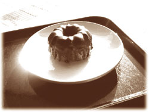

|
哀しみはいつ 琥珀の虫になるのだろう
マガツ石の窪みから溢れる朧げな燐光は
風無きことを祈り 羽撃きを始めた
ひとつの 一羽の 一頭の 一匹の 一人の
（哀し虫は孤独の字を知らず）
迷えるモナーク蝶を照らし出す
幸せも 不幸せも約束されたわけではない
もとよりそんなものは存在せず
滅びるまでは粉々に漂うこの藍色の切なさと
滅びから逃れることのできない より強き藍の慟哭は
あるはずもない匂い木の止まり枝を求めて彷徨う
哀しみはいつ 琥珀の虫になるのだろう
（哀し虫／テオティワカンへの道）
地下水道をわけもわからずに流されて、オアハカに辿り着くまでに十五回寝て十五回目を覚ました。二日もあれば着く、というサンホセの言葉はどう考えても大嘘だった。しかし騙されたからといって腹を立てるような私ではない。後先を考えない嘘に翻弄されることは、カルロスたち厨房のメキシコ人ですでに慣れていた。
ネズミだけではなく、人間のメキシコ系も時おり始末に負えない嘘をぺろりとついた。金は返すよ、絶対返す、命賭けても返すから、と繰り返し誓いながら、一ドルも返さずにメキシコに帰ってしまったカルロスなどはその典型であろう。もちろん嘘をつかない人間などこの世には一人もいないのだから、とりたててメキシコ人やメキシコネズミを責めようとは思わない。だが、たとえばロシア人の出鱈目が道いっぱいに広がりながら速攻で襲いかかってくるものであり、インド人のホラ話がだらだらでろでろいつまでも続くものであり、アメリカ人のみえみえの偽善嘘が最終的には開き直りと直結するものであり、日本人のそれがじんわり犯罪的湿り気を帯びるものだとするなら、メキシコ人はやはり、ぺろりと嘘をつくのだった。怒っても仕方がない。サンホセはきっと私たちを安心させようとして二日で着くなどと放言してしまったのだ。そう思い遣って達観してしまうしかない。それが他の国の人々や、あるいはぺらぺらしゃべるネズミと付き合っていく上での唯一の傷付かない方法である。どの国の人間にとっても、その国を除いたあらゆる人間が嘘つきに思えて仕方がない時がある。そこで留まってしまうと私たちは国境を越えられない。
とはいえ、真っ暗な地底世界をただ流されるだけなのだから、私には時間の感覚も方向の感覚もなかった。木舟に乗ってからどれぐらい経っているのかがわからなかった。私は起きていられるだけ起きていてマルセロやボラボラと堂々巡りの話をし、眠たくなってきたら木舟の底で身体を丸めた。それが十五回繰り返されたというだけだ。
オアハカ州はメキシコのずっと南の方、北米大陸が大平洋とメキシコ湾にはさまれて、モンガラ海老の尻尾のようにグリグリくびれているあたりに位置している。そこから先は最南端のチアパス州。その向こうは中米グアテマラである。その程度の簡単な地理なら私にもわかった。なぜならカルロスがメキシコの地図を広げながら、オアハカの話を幾度もしてくれたからである。彼は毎年数回、定期的にオアハカまで出かけていたのだ。
カルロスの伝を信じるならば、オアハカ往復は毎回相当ハードな旅になったらしい。標高二千二百メートルのメキシコ・シティから千五百メートルのオアハカ州都までは、上ったり下ったり横に滑ったり宙返りしたりと、ルチャ・リブレの悪役レスラーも目をつぶるほど険しい山道が続くそうだ。しかも丸一日のバス旅である。バスは走行中に分解してエンジンだけになってもおかしくないほどのオンボロなので、陽が昇る前の真っ暗闇に出発し、陽が沈んだ後の真っ暗闇に到着すると、腰がはずれた客ばかりでしばらくは誰も立てない。歳をとったらあんな無茶なバス旅はご免だねと、カルロスは道中の苦難を語りながら目をむいてみせた。しかしメキシコは日本の五倍近い広大な国なのだから、それでもオアハカはメキシコ・シティの周辺州だと言えるかもしれない。農産物はもとより、太平洋側の海産物も首都には輸送されている。南部の山岳州だとはいえ、首都と密接なつながりを持つ州なのだ。そのオアハカが首都と大きく違える点は、人種の構成比であるらしい。オアハカは世界一の人口数を誇るメキシコ・シティと異なり、先住民インディヘナの密度が濃くアステカ時代からの伝統色が強い。カルロス曰く、オアハカの色鮮やかな民族衣装はメキシコ随一であり、祭りでそれを着て踊る美しい娘たちを見ていると、ああ、メキシコ人に生まれて良かったなあ、とつくづく思うのだそうだ。私は東京で働いていた頃、商店街の祭りで神輿を担ぐのを手伝わされたことがある。残念なことに、日本人に生まれて良かったなあ、とはお世辞にも思えなかった。褌のお尻を丸出しにした汗臭い中年男たちのかけ声ばかりで、美しい娘たちの乱舞がなかったからかもしれない。私はたぶん、男性的に過ぎる盛り上がりをあまり好まないのだ。
オアハカの祭りはゲラゲッツアと呼ばれるらしい。オアハカ州のあらゆる村々から娘たちが着飾って現れ、それぞれの村に伝わる踊りを披露する。娘たちはその日のための鍛練を怠らないんだ、とカルロスは自慢していた。衣装を色とりどりの糸で刺繍することも毎日やっている。それがオアハカの娘たちの生き甲斐なんだ、と。
娘たちが美しく魅力的であればそこには自然と男たちの輪もできる。だからゲラゲッツアのシーズンである真夏はメキシコ中から男たちが集まってきて、道は大渋滞になるし、泊まるところもなくなってしまう。もちろん娘たちに興味がないわけじゃないが、他の用事でオアハカに出かける人間、たとえば食材の買い出しが目的の誠実な見習い調理師は困ってしまうんだ。それはもちろん俺のことだけどね、とも言っていた。
木舟で身体を丸め、どこまで続くのかわからない漆黒を見つめながら、私はその時のカルロスの苦笑いを思い出していた。カルロスが頻繁にオアハカに出かけていた理由。それはオアハカ特産のチョコレートをリュックサック一杯分買い占めることにあった。
歴史的にこの話が有名であるのかどうかわからないが、私のように厨房を職場とする人間にとってはよく知られた話である。実はカカオからチョコレートを作ったのはアステカ人が初めてで、それは当初は精力剤、あるいは媚薬として伝わる彼ら特有の飲み物だったのである。つまりスペイン艦隊がアステカの特産物を略奪して母国に持ち帰るまで、チョコレートはメキシコ以外の土地には存在しなかった。アステカ人がカカオの利用法を考えなければ世界のお菓子屋やケーキ屋はこれほど繁盛していなかったであろうし、バレンタインデーもぐっと地味なものになっていたはずなのだ。あのナポレオンだって疲労回復剤としてのチョコレートがあったからこそ数々の戦争を企てられたようなもので、チョコがなかったら近代ヨーロッパの歴史は少々変わっていたかもしれない。アステカ人は食を通じて世界にそれだけの影響を及ぼしてきたのだ。
カルロスは伝統的なメキシカン・チョコレートを作っているオアハカ周辺の小さな工場を頭の中にすべて網羅していた。そこで作られる岩肌のようにごつごつとしたチョコレート、そのカカオのシンプルな渋みと砂糖の素朴な味わいをこよなく愛していた。それはモーレというメキシコ独特のソースを作る時にどうしても必要なものであり、メキシコ・シティに出回っている都会派のチョコレートよりもずっと具合が良い、理想的なのだ、という話だった。
チキンをモーレで煮こんだもの、七面鳥をモーレで煮こんだもの、その双方の伝統料理をカルロスは私に作ってくれたことがあった。モーレの作り方はいたって複雑である。しかし私は料理に関する記憶力だけは誰にも負けないのでその作り方を詳しく覚えている。
モーレはまず、乾燥唐辛子を湯に浸すところから始めなければならない。生の唐辛子でも良いが、できれば唐辛子を戻した湯も使いたいので、ハラペーニョやセラーノよりもアンチョなどの乾燥メキシカンペッパーがいいのだとカルロスは言っていた。
厨房に火をつけて最初にやることは、大量の白ごまをフライパンで炒ることである。色が黄金色に変わるまで炒る。だが焦がしてはいけない。ここでゴマを焦がしてしまうとソースの苦味が強くなってしまう。ゴマを炒ったら、今度は同じ要領でアーモンドとピーナッツを別々に炒る。この時の香ばしいラテン系の匂いは日本料理にはないものだ。メキシコの料理を作っているのだと感じられる瞬間である。
続いては切り刻んだ玉ねぎとニンニクをオイルで炒めること。これは強火で三分ほど。そこに湯で戻した後みじん切りにした唐辛子とトマトを入れ、ともに十分ほど中火で炒める。さらにそこにスライスした緑色の料理用バナナ、レーズン、プルーン、オレガノを入れてごちゃごちゃと火を通し、唐辛子を浸した湯、炒られたゴマ、アーモンド、ピーナッツを加えて十分ほど煮こむ。チョコレートを入れるのはこの時である。魔法のソースのように怪し気な香りを放つメキシコの果物、ナッツ、唐辛子。びびってはいけない。この神秘的な食材のうねりにチョコレートが加わった時の香りはさらに数段、非現実性を増すからである。呪文か何かを唱えたくなる匂いだとも言えるし、果たしてこれが食べ物になるのだろうかという衝撃もある。しかしそれらを一度ブレンドして、ローストしたチキンや七面鳥と煮こんだ時の、世界のどこにもない、メキシコ人が心から自慢できるモーレ料理の味わいはどうだろう。七面鳥のモーレソースを口に運んだ時の舌のざわめき。結果的にはにんまりと笑えてしまうモーレの不思議な主張。それは獰猛なる優しさ、未体験の柔らかな硬質、甘味を詰めこんだ苦味とでも言うべき背反し合う要素の奇跡的調和である。メキシコの大地が生み、育て、滅ぼし、循環させてきたあらゆる命を、しかもそこに漂う虚無や怒りまでを時間をかけて渋みに変え、一枚の原色の花びらに昇華させたような味わいである。
ボラボラが宝の中には食べ物が含まれていると言った時、私はひそかにチョコレートを予感していた。メキシコから世界に伝わった食べ物であり、それが人にエネルギーをもたらすものであればなおさらのこと、チョコレートは宝にふさわしいと思えたからだ。ボラボラが木舟の先端でうとうとしながらささやいた「宝は赤、宝は緑、宝は黒・・・」という言葉もその考えを後押しすることになった。シンプルなメキシカン・チョコレートはビター感が強く、その色は黒である。
「ボラボラ・・・あなたはチョコレートのことを考えていますね」
私は何度目かに目を覚ました時、その考えを直接ボラボラにぶつけてみた。通り過ぎていく地下水道の壁から水晶を引っこ抜いて木舟に並べてみたり、その灯りで照らされるマルセロをからかったり、ボラボラが繰り出す謎掛けを真剣に考えてみたりもしたが、やはり本論に入らなければいつまでも続く退屈をやり過ごすことができなかったのだ。
マルセロは尻尾で舵をとりながら、私のチョコレート発言にしきりに頷いている。
「マルセロ知ってる。チョコレートを食べると線路を走る時に元気が出る。十秒十七枕木が十八枕木になる。マルセロ知ってる。チョコレートは食べ物の宝かも知れない」
だが肝心のボラボラは、あまり肯定的なものの言い方にならなかった。
「さすがに間抜けとはいえ、タカハシのせがれは厨房で働く人間じゃ。チョコレートに目を付けおったか。しかし、なぜじゃ？ なぜチョコレートが宝なんじゃ？」
私はそこでチョコレートがアステカ発祥の食べ物であること。それがヨーロッパに伝わり兵士の常備食となったこと。世界を席巻するほど愛されたこと。今でもモーレソースでメキシコ人はチョコを食べていることなどを簡単に語った。
ボラボラは、うん、と首を振ったきり、暗闇を見つめている。そしてぽつぽつと語り始めた。
「スペインの軍隊がかつてのアステカ人に行ったこと。それはこの世に現実の地獄を作り出すことだったんじゃよ。メキシコだけではないがのう、北米の先住民はヨーロッパから侵入してきた白人たちによってなぶり殺しにされてしもうた。アメリカやメキシコの歴史を語るまでもあるまいて。南米アルゼンチンなどはもしかして先住民がまったくおらんと言ってもいいような状態じゃ。村はすべて焼かれたし、先住民は残らず殺されたのじゃからのう。涙キノコの虹石は彼らの永々たる哀しみじゃ。首を削ぐ巨大な刀や火を吹く鉄の棒に囲まれてジャングルに追われ、逃げても逃げても追い掛けられ、その逃避行中に老いた親や自らの子を失い、最後には猟と称されて殺されてしまう。その無念はいかばかりのものであったろう。そうやって・・・アステカ文明は壊滅的にやられたんじゃ」
まるでその時代を目撃したかのようにボラボラは話し始めた。
「それもこれも・・・最初にガツンとスペイン人を排斥しなかったアステカ皇帝モンテズマの徹底的な勘違いがあったからじゃよ。十六世紀初頭にメキシコに上陸したスペイン軍は、エルナン・コルテスという大将が率いておった。彼らにとって新大陸の発見は戦いと征服の幕開けでしかなかったというのに、モンテズマはそこを間違えよった。なぜならマヤ時代から信仰の対象であった太陽の神、その神を滅ぼすのは闇の世界からやってくる白い神々だという言い伝えがあったからじゃ。アステカ人は太陽の神を弱らせないために、ことあるごとに人間の生け贄を捧げておった。それぐらい太陽を敬い、闇からやってくる白い神を恐れておったんじゃ。モンテズマはスペイン人をまさにその白い神からの使者だと思いこんでしまったんじゃ、よくはわからんがの、もしかして。そこでじゃ、コルテス一行の怒りを鎮めようと、彼らをティノチティトラン、これは今のメキシコ・シティじゃな、その宮殿までわざわざ招待した皇帝は、スペイン人に何をふるまったと思う？」
「テキーラか、何かですか？」
「チョコレートじゃよ。後に滅ぼされることも予測できず、チョコレートをふるまったんんじゃ。皇帝はカカオ中毒だったという話が残っておる。精力剤としてチョコレートを飲みながら、いつしかそれなしではやっていけない身体になっておった。一日に数十杯もチョコレートを飲んだと伝えられておる。そうやってのう、チョコレートはスペインに渡った。御丁寧に金銀財宝のみやげまで付けてな。スペインのイザベラ女王やフェリペ二世、そのまわりの貴族どもはそれらの財宝やチョコレートを見て、快哉を叫んだんじゃ。軍隊を増強せよ。彼の地を征服せよ。新スペインと名乗れ！」
私は真っ暗な地下水道に、五百年前のアステカの宮殿を思い描いていた。当時のメキシコ・シティはテスココという巨大な湖のど真ん中に建設された宮殿の街であったはずだ。
巨大な石の柱。無数のかがり火。色鮮やかな民族衣装を着たアステカの人々。波を忘れた鏡のような湖。そこに映る満月。多くの兵士に守られた皇帝は謁見の場でスペイン人たちを招き入れる。そして陶器にチョコレートをなみなみと注ぎ、それを飲み干す。皇帝は陶器を湖に投げる。スペイン人たちにも次々とチョコレートの入った陶器が手渡される。彼らは見よう見まねでそれを口にし、あまりの苦さと経験したことのない香りに顔をしかめる。だが皇帝はすでに次のチョコレートに手を伸ばしている。スペイン人は我慢してそれを飲み干す。そして皇帝と同じように陶器をテスココ湖に投げ捨てる。沈黙の湖面はそこで波立つ。満月の影が大きく揺れて幾重にも割れていく。アステカ人たちが守り抜いてきた世界がその日から壊れ始めたことを象徴するかのように。

「じゃからのう、なんじゃかわからんが、どうもチョコレートには悲劇的な匂いがつきまとうのじゃよ、もしかして、とワシは思うな。たしかにチョコレートは身体に良い。人間の最近の医学では、チョコレートが抗酸化食物であることもはっきりとしてきおった。エネルギーを与えるだけではなく、もしかして動脈硬化やガンにも有効な食物であるとわかってきおったんじゃ。ワシは最近、若いネズミたちに率先してチョコレートを食うように言っておる。ただし糖尿病予防のために砂糖含有率の少ないチョコじゃがのう」
このネズミはいったいどこまでものを知っているのだろう。どうにもかなわない。
「ボラボラ、どこでそんなことを？」
「ワシはハーバード大学の床下だけでなないぞ。医学の殿堂、カーネギー・メロン大学の床下にも潜りこんでおったんじゃ。体系的には学べておらんが、断片断片のデータはタカハシのせがれ、お主よりなどもよく知っておるつもりじゃ、もしかして」
「マルセロ知ってる。学士ボラボラはやっぱりすごい」
マルセロはごわごわと流れる地下水に尻尾を浸しながら御機嫌な表情である。
「チョコレートの国別消費量は胃ガンの発生率と反比例する、というデータもあるそうじゃ。すなわちチョコレートをよく食う人間やネズミは胃ガンになる確率が少ないということじゃな、もしかして」
「それならばやはり、チョコレートこそが宝の一つなのかもしれませんよ」
「うむ、そうだと言えるかもしれん。しかしそうでないとも言える」
ボラボラの言葉は相変わらず難しい。
「チョコレートをよく食べるベルギーやスイスはたしかに胃ガンの発生率が低い。だが自殺はどうじゃ。国連でニールセンが説明してくれたWHOの資料を思い出すがよい」
「マルセロ知ってる。ベルギーとスイスは日本なみに自殺率が高い。マルセロ知ってる」
そう言われてしまうと、チョコレートの弁護が難しくなる。
「チョコレートはたしかに身体には良い部分もあるし、エネルギーをかき立てる稀有な食物でもある。しかし昂りがあれば落ちこみがあるのも世の理じゃろう。目を見張るだけの躁があれば、習慣性が付いた時、それに匹敵するだけの鬱も忍びこみやすいのではないか、とワシは考えてしまうのじゃ。老婆心じゃがのう、宝にしては起伏がありすぎる。まあ、あくまでも推測じゃがのう、もしかして。実際にオアハカの村を歩いてみんとな。それに・・・これはワシらネズミには遠い話じゃが、チョコのためにいったいどれだけの命が奪われたのじゃろう、という歴史的疑問もある」
「それはナポレオンの・・・」
「そうじゃ。エンペラーの時代より兵隊に好まれたものじゃからな。敵も味方もチョコレートを食い、その昂る気持ちで殺し合った。ついこの間の、二十世紀の戦争までチョコレートは兵員食として欠かせないものじゃった。時代が不幸だったからとはいえ、そのようなものが憂鬱の砂嵐を滅ぼし、今後人間やネズミを救う宝になるのであろうか？ どうだどうじゃどうだどうじゃ？ チョコレート好きのワシだからこそ考え過ぎておるのかもしれんがのう」
「しかし、恋の小道具としても使われていますからね。ロマンティックでいいじゃないですか。疲れを取ってくれる効能もあるわけだし、やはりチョコは宝のひとつに入れてもいいぐらい偉大な食べ物ですよ」
そうは言ったものの、私にはよくわからなくなってしまった。これまでどう使われてきたかということはあまり関係がないのでは、という気もしたし、どう使われてきたか、ということそのものが一番大切なのだという気もした。やっぱりよくわからない。眠くなってくる。木舟の中で丸くなり目を閉じる。そして再び目を開ける。
「しかしボラボラ・・・」
「なんじゃ？」
「あなたはたしかにつぶやいていた。宝は赤、宝は緑、宝は黒・・・と。私はその黒という色にチョコレートをイメージしたんですよ。あなたたちのネズミ国連では、その色にまつわる宝の話はまったく聞かなかった。いったいどこでそれを仕入れてきたんですか」
「ワシが床下に潜ったのはハーバード大学とカーネギー・メロン大学だけではないぞえ。ワシはニューヨークの国立自然史博物館の床下にも書斎を持っておるのじゃ。そこでマヤからアステカにかけてのメキシコの資料にしっかりと目を通しておる。タカハシのせがれが大してうまくもない定食を厨房で作っておる間になあ」
ボラボラはいつもひとこと余計だった。宮川のじっちゃんもそうだった。それに比べて我が家はいつもひとこと少なかった。父も母も余計なことはあまりしゃべらなかったし、必要以上に自分を出そうとはしなかった。私もその血を引いてしまった。家族三人の食事を上から覗けば、実につつましやかな光景だったに違いない。元妻モモコからは存在感が薄いとよく叱責された。その私が人並にものをしゃべるようになったのはニューヨークに渡ってきてからである。あの街では発言をしないと完全に無視された。それにカルロスたちメキシコ人はよくしゃべった。ふだんは無口に見えるメキシコからの不法移住者。しかし実は彼らの喜びはしゃべること、そして食べることなのであった。メキシコ人は口で生きている。私は彼らと付き合うことで、自分に起きたことをてらいもなく話せるようになったのだ。
「宝は赤、宝は緑、宝は黒、なのですね。三つしかありませんね」
「うむ。四つめはまったくわからん。それにその、赤、緑、黒という色にしたところで自信があるわけじゃないんじゃ。アステカの言葉は忘れ去られ、マヤ文明にいたっては文字すら持たん。神殿から発見された古い暦に描かれていた図柄や象形から色という抽象概念を強引にひねり出したワシにも、彼らが言わんとしていることはよくわからんのじゃ、もしかして」
私たちは目が覚める度にそのような話をし、木舟の端に置かれたコーヒー豆の袋の中から瓶詰や缶詰をもぞもぞ取り出しては腹の足しにした。トウモロコシのテキサス風チャンクソースをパンにはさんだり、ニシンやイワシのオイル漬けをつまむだけの簡単な食事である。でも、それらの食べ物がなかったら果たしてオアハカまで辿り着けたかどうか。ネズミたちに感謝である。コーヒー豆の袋も含め、持ち物のすべては方々のグロッサリーや厨房から彼らが総がかりで盗み出してきてくれたものだった。二日でオアハカに着くなんて、実は最初から誰も信じていなかったのだ。
袋の中にはそれ以外にも、醤油の瓶や味噌のパック、カップ酒、味醂、ごま油、だし昆布や花がつおなどが大量に入っていた。ステンレスの菜切り包丁も添えられていた。メキシコへの準備と称して、日本食の基本的な調味料を揃えるようネズミたちに命じたのはボラボラである。きっといつか私が使うことになるから、という理由だった。ニューヨークは日本人の人口が多い。近隣のニュージャージー州やコネティカット州などの通勤圏を合わせれば領事館に登録しているだけでも七万人を越える。需要がしっかりとある以上、マンハッタンのデリやスーパーマーケットには必ず日本の調味料が置いてあった。ボラボラはそのことをちゃんと知っていたのだ。カップ酒の味もである。彼はよくちびちびと酒を飲んだ。そして宮川のじっちゃんのようにくだくだと酔っぱらった。
「日本の酒はよいな、もしかして。あっはー、ワシはマグロのヅケで飲むのが好きじゃ。トロじゃなくてもよい。赤身でけっこう。ビタミンEと鉄分が多いからのう。脳みそを活性化させるドコサヘキサエン酸も魚にはたっぷり含まれておる。そういう意味では、刺身や寿司は日本人の偉大な発明じゃよ。くっ、しかしメキシコも凄いぞ。チョコレートだけではない。ワシらが今つまんでおるトウモロコシな、こいつも発祥はアステカじゃ。まったくメキシコは大した歴史を持つ国じゃよ、もしかして、のう、タカハシのせがれや」
ボラボラの博識を聞き流しながら私はまどろむ。マルセロの尻尾が舵を切っている水音が聞こえてくる。そのまま私は深い眠りに入る。そうこうしている内に時間がどんどん過ぎていき、私たちはオアハカの一本杉に辿り着いたのだった。
サンホセが涙キノコの笠に描いてくれた地図の説明によれば、その木はメキシコでもっとも背の高い杉だということだった。背が高いということは根もそれだけの張り方をしているということである。たしかに私たちの進んでいた地下水道はめったやたらに絡んだ大小さまざなま木の根で塞がれ、そこから先には進めない状態であった。地図に描かれた一本杉ではなかったにしろ、もうそこで地表に登るしかなかったのだ。
大木だけあって、木には祠があるのであろう。幾つかの太い根を揺すってみると落ちてくる土砂に日光が混じっていた。私は一番太い根に抱き着き、子供の頃親しんだ木登りの要領で地表に向けて登っていった。こういうの、何というのだろう。木登りではなく、根登りだ。根を足の間に挟みこみ、ところどころにあるこぶを両手でがっしりとつかんで身体を引き上げる。ボラボラは私の肩に、マルセロは私の背中にしがみついている。尻尾の先にコーヒー豆の袋を縛り付けて。
ぐいっ、と懸垂をして登る度にマルセロは私の背中でキャキャキャキャッ、と喜んだ。その度に袋がぶらぶらと揺れ動いた。ボラボラは人の肩に乗っているくせにやかましかった。斜め上の根の分かれ目を右手でつかむんじゃ、左手に気をつけろ、こぶに隠れているメキシコニイニイゼミの幼虫をつぶしてしまうぞ、とあれこれ注文してくる。私は額や首筋に汗をにじませながら日光がもれている方向に身体をねじ上げていく。落ちてくる土砂がやっかいだったが、やっと地表に出られると思えば大して苦にはならなかった。
根をつかみながら、私は城ケ崎の巨大なクヌギの木を思い出していた。その枝にはアケビの蔓がぎっしりと絡んでいて、秋になれば甘い香りのする紫色の実をたくさん付けた。アケビは熟れて食べごろになってくると、その細長い球体をニューオリンズ名物のポボイサンドのように割り、とろけるように甘いから食べていってちょうだい、ついでにそのあたりの雑木林にアタシの種を撒いていってくれないかね、と誘惑してくるのだった。もちろん私たちは学校の帰りにそのクヌギの木に登った。子供たちが群がって食べてしまうので低いところからアケビは姿を消していった。誰よりもアケビを食べようと思えば一番高いところまで登るしかない。私はある日、それ以上登ると危ないぞ、と上級生に言われたにも関わらず枝をどんどこ上がっていき、そこで突然身体が硬直してしまったのだった。眼下に見える子供たちの小ささに高所の恐怖を感じ始めた上、手にしようとしたアケビの蔓に一匹のアオダイショウが絡んでいたからである。アオダイショウはおそらく、アケビの実をついばみにくる小鳥かヤマネズミを狙っていたのだろう。感情を押し殺した小さな目で私をじっと睨み付け、動くと噛みつくぞ、と囁いているようだった。ヘビに睨まれたカエルならぬ、ヘビに睨まれた少年である。私は本当に動けなかった。指一本動かせなかった。アオダイショウが私の腕を這い、別の枝に向かって進んでいくまでその場で凍り付いていたのだった。私はあの時の時間が止まってしまったような風景を忘れない。黄色がそよぐクヌギの葉。紫の皮をぱっくりと割ったアケビ。そこに絡み付いていたアオダイショウの群青。きらきら冷たく光った紅の目。その先にあった秋の伊豆の空。
伊豆はやはり特別な場所だった。色があふれるように押し寄せてきた。刻一刻と変わる海の青色系だけではない。山の命たちもそれぞれ固有の色彩を放っていたのだ。その万華鏡のような世界。東京にもニューヨークにもそういった鮮やかさはなかった。歳をとったら看板やネオンの彩りは身体にきつくなるだろう。私は回り回って伊豆に帰ることになるのかもしれない。
しかしそう思ったところで、せっかく浮かび上がってきた故郷の景色はかき消されてしまった。突然何かが上から降ってきたからだ。それはバタバタと音を立て、遥か下の闇に向けて落ちていく。私は指先に力をこめ、精一杯根の張り出しにしがみついた。マルセロも首を引っこめている。
「な、何だろう」
「マルセロ知ってる。たぶん大コウモリ」
「コウモリかい？ じゃあ、何で落ちていくんだ」
また落ちてきた。固まりのように絡み合い、同じくバタバタ音を立てながら幾つも落下してくる。
「マルセロ知ってる。たぶん女の人」
「そんなバカな」
「うーむ、ワシが思うに、女の人ではないな。おそらく、女の人の形をしたものじゃ、もしかして、とワシは思うな。束ねた衣服か、あるいは反物か何かか」
ボラボラがそう指摘している最中にも次々と落ちてくる。空気を切る音からして重量のあるものではないということはわかったが、根の下とあって私たちはまだまだ闇の中にいた。手探りの世界である。そんなところでわけのわからないものに直撃されることは避けたかった。バタバタ音を立てるものは私たちのすぐ近くを落下していくのだ。
「やや、タカハシのせがれ。何か、聞こえんか」
ボラボラが耳をそばだてた。
根にしがみつくのに一所懸命で私には何も聞こえない。
「聞こえるぞ、聞こえるぞ。誰かが泣いているような哀しい波長が降りてくる」
マルセロも同調した。
「マルセロ聞こえる。誰かが泣いている。マルセロ聞こえる。誰かが泣いてる」
言われてみれば聞こえるような気もする。泣き声だとすれば子供ではない。大人の女の啜り泣く声だ。喉元で哀しみの焔が燃えているような、ひどく痛ましい声だった。
その時、根の上の方から日光に混じって一匹のハツカネズミが降りてきた。切れ長の目をした真っ白なハツカネズミである。
「学士ボラボラにマルセロに、人間の何とかさんだね」
「さよう。ワシが学士ボラボラじゃ。この大きなのがマルセロ。それでこのもっと大きなのが人間のタカハシのせがれじゃ。して、お主は？」
ハツカネズミはボラボラの悠長なものの言い方を振り切るように早口でものをしゃべった。
「あなたたちずいぶんと遅いじゃないかい。ニューヨークからモナーク蝶が知らせを持って飛んで来たのはもう一週間も前だよ。アタシはこの木の祠であなたたちをずっと待ってたんだ。さあ、早く。もう間に合わないかもしれない。急いで」
何が何だかわからない内に私たちは急かされていた。懸垂を繰り返して私は身体を引き上げる。汗が滴り落ちる。喘ぎながら私は尋ねた。
「モナーク蝶って？」
「カナダあたりからメキシコまで一気に飛んで来る蝶のことさ。虫の知らせって言うでしょ。さあ、そんなことよりも早く。助けてあげて！」
ハツカネズミの声は悲鳴に近くなった。よっぽど急いでいるに違いない。
でもいったい、何をだ？
私たちに何をさせようとしているのだろう？
胸の中で警戒信号が幾度も点滅する。
もしとても危険なことだったら？
荒っぽいことに巻きこまれるような・・・いや、いきなり憂鬱の砂嵐と対峙するような非常事態だったら？
いずれにしろ安穏とした状況ではないからハツカネズミは慌てているのだろう。何かしら突発的なことが起きているのだ。そう思うとよくわからない内に腰がひけてくる。しかしメスらしきハツカネズミに「助けてあげて」と言われてのんびり構えているわけにもいかない。相手が人間でもネズミでも、メスの頼みに私は弱い。それはきっとボラボラやマルセロだって同じことであろう。彼らだって何も把握していないくせに、急げや急げホレ急げ、とやかましい。ハツカネズミの態度に嘘がなかったことも拍車をかけた。私たちをずっと待っていたというのは本当なのだろう。だから私は懸命に根を登った。最後は腕がぶるぶると震えて年齢を感じたが、それでも無理やりよじ登った。そうやって木の祠にやっとのことで辿り着き、そこから地表に顔を出したのだった。
肌の感覚としては数週間ぶりの地表である。急かされた状態だとはいえ、風が運んでくる空気の新鮮さに身体は正直な反応を示した。全身を幾度も肉体的歓喜の波が駆け抜けたのだ。しかし同時に、目は射られたように痛んでいた。日光の強さがあまりに唐突で目を開けていることができない。しばらくは自分が登ってきた闇に顔を向けてみたが、それでも耐え切れずに目をつぶってしまった。長い間の地下生活で目が明るみに対応できなくなっていたのだろう。ボラボラやマルセロもまったく同じである。こりゃ、まいったのう、などとうめきながら私のそばで丸くなっている。だが、啜り泣きの声は近い。
「早く、早く、人間の何とかさん、助けてあげてよ！」
ハツカネズミが私の周りをつんつく飛び跳ねているのがわかった。すぐそばで誰かが泣いていることもはっきりとわかった。しかし目がいうことをきかない。細目をこじ開けるのがやっとで、それ以上目を開こうとすると、容赦のない小さな兵士たちが日光から眼球へと侵入してくるようだった。汗がどっと滴り落ちる。穴を追い出されたモグラが苦しみもがく理由がよくわかった。モグラは穴に戻れないとそのまま死んでしまうのだ。
「早く、助けて！ 死んじゃう！」
何？ 死んじゃう？
ハツカネズミのその声が、私に目を開けさせる蛮勇を与えた。
まるで二つの目玉を力任せに握られているような痛みである。視界もおぼつかない。すべてが陽炎のように揺れている。それに白黒写真のように色彩が感じられない。初めて踏んだメキシコの大地だというのに、花もなければ緑もない。沙漠を記録した古い映画の中にぽっかりと迷いこんでしまったような感覚だ。
私はあたりを見回す。目の痛みが頭にまで走る。思わずこめかみに手をやる。祠の上から伸びる太い枝が地表に一本の影を作っている。その影の先には地面から盛り上がり、地を這うように突き出している根があった。根の上に立っているのは肩を震わせている若い女性である。二十歳を過ぎた頃であろうか。先住民インディヘナのものだと思われる地味な民族衣装を着ている。その衣装にも色がない。彼女の首からはロープが垂直に伸びている。ロープは真上の木の枝とつながっていた。哀しい声を発していたのは彼女だった。そして彼女は今まさに根の上から片足を投げ出さんとしているところだった。
私は自分の目の痛みを忘れて瞬間的に祠から飛び出していた。何かを言おうとしたが言葉にはならなかった。素足のまま、泥でどろどろのでろでろのまま駆けていき、首を吊ろうとしている彼女の前に滑りこんだ。
「ちょっと、ちょっと、ちょっと待った！」
裏返ったような声になってしまった。彼女は目を真ん丸に見開いて、口を半開きにして私を見ている。よっぽど驚いたのだろうか、根から踏み出そうとした片足は宙で止まっている。私自身も空気を飲んでいるようなしゃべりかたになり、うまく言葉につながらない。何かを言おうとすると咽が空回りするのだ。
「あの、あの・・・とにかく・・・早まっちゃ」
顔の表情が固まったまま、彼女は私を見ている。
私は空気とごちゃ混ぜになった言葉を吐いている。
「あの・・・」
非常事態なのにそういうことに気付いてしまうのは人としてどうなのかとも思ったが、正面から見た彼女は鼻が低く、どちらかと言えば下膨れの顔をした女性だった。メキシコ女性にしては珍しく目の輪郭もあやふやだ。しかもその目のまわりは気の毒なぐらい腫れ上がっている。ずっと泣いていたのだろうか。
「あの・・・」
彼女は泣き腫らした顔で空を見ると再び私の顔を覗きこみ、強ばった表情のまま深呼吸をしてみせた。そして、宙に浮いていた足を強制されたかのように根の上に戻した。
「・・・いったい、どうしたの？」
もっと気のきいたことを言えないのか、と思った。でも、言えなかった。相変わらず言葉に空気が混じる。うじろうじろしい。自殺を図ったことのある私が、死を選ぼうとしている目の前の人間にひどく動揺している。
「あの・・・」
彼女の背後で枝に茂った葉が揺れていた。灰色の葉だった。その揺れは視界全体を震わせた。一度頭に上った血が今度は引いて行く。目が痛い。いたるところから日光が攻撃してくる。頭を振っても、視線を落としても、久々の日光は針で刺すようにいやらしく突いてくる。
「・・・どうしたの？」
なぜか私の方が喘いでいた。根の上の彼女も蜃気楼のようにゆらゆらと揺れている。首のロープを取ってやらなければいけないと思った。ロープがなくなるまで安心できない。私は喘ぐ。震えも走る。頭が痛い。すると突然、光の束の向こうに夕暮れのビルの屋上が見えた。そこはきっと東京だ。屋上の縁で顔を引きつらせているのは未来の私の娘だ。夕暮れから赤が消えていた。灰色の東京だった。私の娘の唇も黒ずんでいた。
視界がぐにゃりと曲がった。
「あなたこそ、大丈夫ですか？」
根の上で下膨れのメキシコ娘がロープを首に巻き付けたままそうささやいたような気がした。だが、何も答えられない。
身体がふわりと軽くなり、背中に衝撃がやってきた。私はどうやら、その場に倒れてしまったようだった。
「よく倒れる男じゃのう」
ボラボラの声がかすかに聞こえた。
私はボラボラに向けて懸命に手を差し伸べていた。
だが、ボラボラはどこにもいない。
その内、今起きていることはあの時と同じなのではないかと思えた。
ブルックリンのダスタシュートを落ちる時に経験したことだ。
ボラボラもマルセロも私のそばにはいなかったが、メキシコの強烈な陽射しだけは遠くに去ろうとしている私を執拗に追いかけてきていた。まぶたを閉じても消えてはくれなかった。陽射しは光の輪になり、重力から離脱した私を取り囲んだ。輪はきらめきながらぐるぐると回っている。私との距離を測るかのように輪は広がり、あるいは狭まり、それでも回り続けている。
不思議と嫌悪感は薄らいでいった。陽射しが目を痛めつけた時は堪えられないと思ったが、輪に転じた光が私の敵でないことは徐々にわかってきた。まるで私は土星のように輪を従え、どこだかわからない空間に浮かんでいるのだった。
空間は紺碧に支配されていた。空の一番すがすがしい色に私は溶けこんでいるようだった。遥か眼下には緑の地平線が見える。空の端まで続いているような球形の世界。そのすべてがジャングルなのだった。甘い風が吹いていた。
輪は私を包みこむ。包みこみながら近付いてくる。まばゆいばかりの輪の表面に細かい模様が見えた。模様は規則正しく刻まれていて、何かを一枚ずつはめこんだような作りだった。日本家屋の瓦屋根。いや、西伊豆に伝統的に伝わるなまこ壁・・・そうだ。うろこだ。この銀の光を放つ一枚一枚は、生き物のうろこ。
「私は・・・クェツアールコアトル」
タンカーが波をかき分けるような重低音の響きで、うろこの主はそうささやいた。輪はいつのまにか巨大な白銀の蛇に変わっていた。私は蛇のとぐろの中でぽっかりと浮かんでいるのだ。蛇は白い羽毛の生えた翼を持ち、その先端で風を切っていた。
「私は・・・クェツアールコアトル」
蛇はもう一度言う。空気の振動が私を貫いていく。
前にも一度お逢いしましたよね・・・胸の中でそうつぶやいたけれど、それは言葉にならず、目の前のうろこに吸い寄せられていった。
あの時と同じで、一枚一枚のうろこにはくたびれた中年男の顔が映っていた。額の上から頭頂部までがすっかり薄くなり、目の下に大きなくまのできた冴えない東洋人の男。無精髭が生え、疲れ切った顔をしている。
何度見ても情けない顔だ。ニューヨークで精悍な欧米顔やアフリカ顔を見慣れてしまったせいであろうか、もともとの扁平な東洋人顔にもコンプレックスに近いものを感じていた。そこにさらに年齢的なたるみと疲労が加わり、私の顔はしなびたカボチャである。スーパーの売れ残りの西洋スカッシュである。今にもダンボール箱に入れられて捨てられてしまいそうだ。
ああ・・・と、賞味期限の過ぎたマスタードのようなため息を私はついた。
ところがその時、蛇のうろこが前回とは違う現象を見せていることに気がついた。
うろこに映っていたのは私の顔ばかりではなかったのだ。私の顔が映ったうろこ。その隣のうろこに、何とカルロスの顔が映っていたのだ。
カルロスもまた疲れた顔をしていた。どんな逆境にあっても笑顔を忘れない男なのに、ジョークひとつひねり出すのもままならないという弱々しさだった。鈍い視線で正面を見据えている。どんよりと重い不幸の影が顔全体を覆っているようだった。
「カルロス・・・どうした？」
カルロスは何も言わない。ひとかけらの希望も感じられない顔でうろこの中に収まっている。そしてそのまわりには、まったく見ず知らずの人々の顔があった。白人もいれば黒人もいる。もちろん私のような東洋人もいる。蛇がゆっくりと動く度にきらめきは千々に変わり、うろこに映る顔もまた次々と変わっていくのだった。
思わずうろこに手を伸ばしてしまったのは、知らない顔の連続の中に、私の父親らしき顔を見つけた時だった。その顔は、シケの海に出ていって、大した魚も獲れずに帰ってきた時の父親に似ていた。げんなりとして、目の奥にひどい疲れがにじんでいた。
「父ちゃん、俺だよ！」
私はうろこに映った父親らしき顔に、思わず荒々しく声をかけてしまった。しかしその顔はカルロス同様に正面を見据え、何かを諦めた表情でそこに留まり続け、そしてうろこのきらめきとともに消えてしまったのだ。これは陰湿な感じがした。悔しかった。砂嵐の呪いが見せているものなのだろうか。
「父ちゃん！」
「私は・・・クェツアールコアトル」
蛇が再びささやいた。私などひと飲みできそうな巨大な頭にブルーの瞳。その瞳が宙に浮かぶ私を見つめている。
突然、蛇の翼が強い光でぎらりと輝いた。目が痛む。私は顔を腕で押さえる。
まるで太陽がすぐそばまで降りてきたかのようだ。熱の放射を感じる。
その中で蛇が何かを言っている。
私には聞き取れない。理解できない。
蛇が何かを言い続けている。
風の音が聞こえる。
一瞬、額に冷たさを感じた。
声が聞こえる。
女の声。
声が。
|